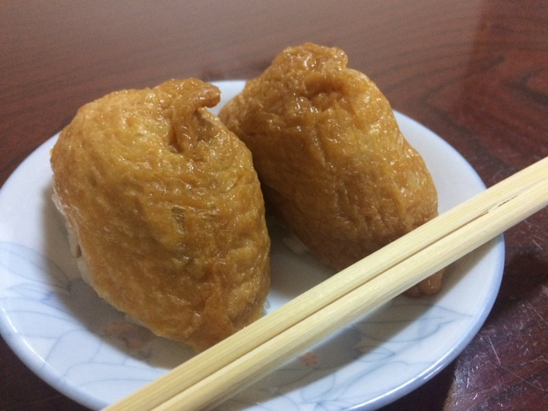
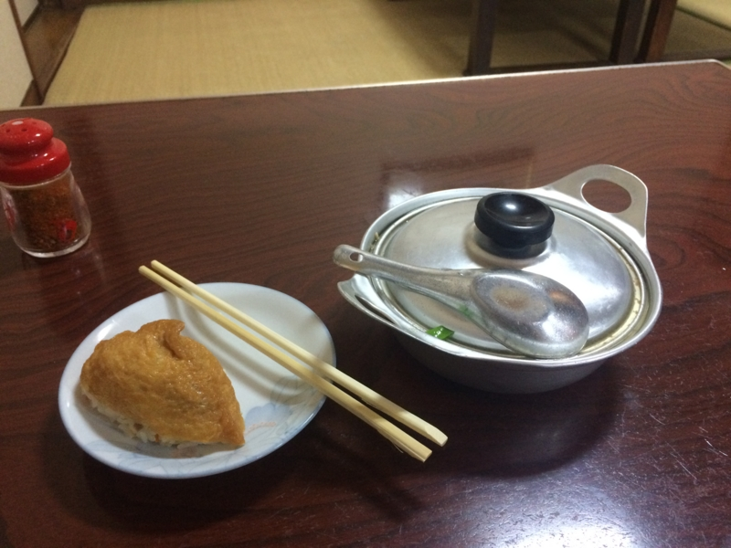
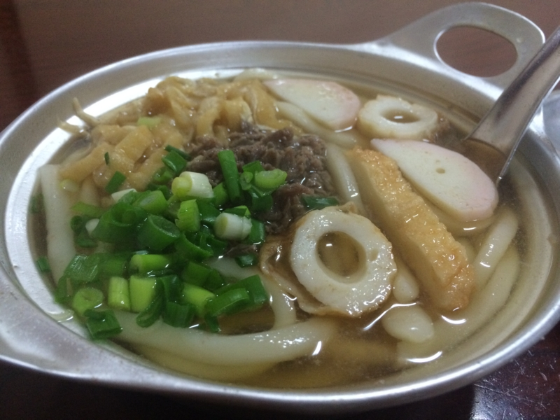
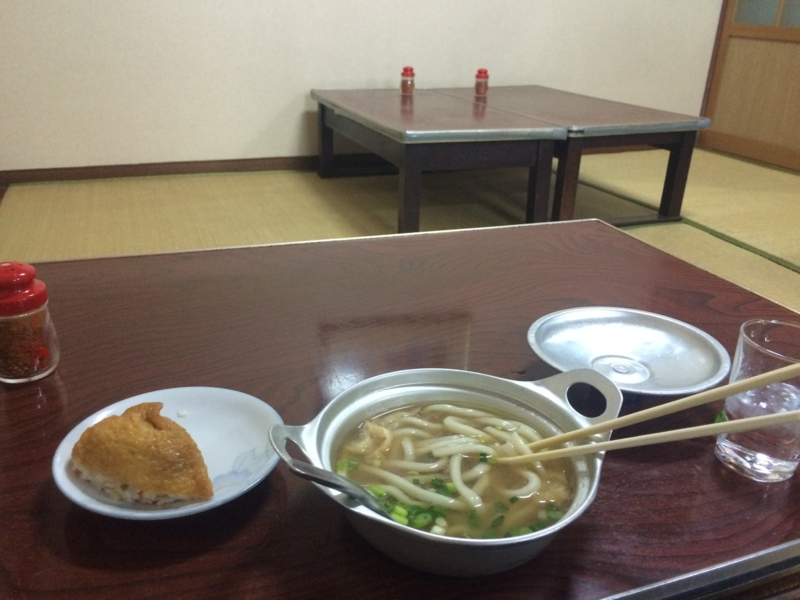

鍋焼きうどんが松山のソウルフードらしいので、ちょっと食べてきた。
公開日：
松山に引っ越してそろそろ1年になるけど、まだ鍋焼きうどんを食べてなかった！ というのを、『おへんろ』の松山編を見て思い出した。
- おへんろ。～八十八歩記～ 第28話「突撃！ 魅惑のワンダーランド！エリア51」 ‐ ニコニコ動画:GINZA（残念ながら無償視聴期間は過ぎたので有料）
そういえば、『永遠のゼロ』の漫画版でも主人公が食べてたね。
")
- 作者: 百田尚樹,須本壮一
- 出版社/メーカー: 双葉社
- 発売日: 2012/09/07
- メディア: Kindle版
- この商品を含むブログを見る
ここにでてきたのは「ことり」という店だけど、今回は「アサヒ」に行ってきた。どちらも銀天街（松山市駅から大街道（松山城への入り口）に伸びる商店街）のちょっと入ったところにある。松山市駅から歩いて、大街道に向かって左へ曲がるあたりにある小道を覗いてみれば、たぶんどちらかはすぐに見つかると思う。
ちなみに、松山では長年「ことり」派と「アサヒ」派で血で血を洗う抗争が続いているのだそうだ。たいへん恐ろしいことである。

一人で訪れると、畳敷きの座敷へ案内された。メニューも何もないので、とりあえず「鍋焼きうどんください」と注文。店内を見回すと、棚においしそうな稲荷寿司がならべてあったので、それも頼んだ。一つか二つか聞かれたので、一つだけ注文することもできるのだろう。自分は二つ頼んだ。文庫本を開き、稲荷寿司を一つ、二口に分けて食べる。フツーに美味しい。

すると、アルミ（？）製の鍋にはいった鍋焼きうどんが到着。
ちょっとびっくりしたのは、この時点でお勘定を要求されたこと。慌てて財布をお尻のポケットから抜く。お会計は、鍋焼きうどんとお稲荷さん2個で720円。鍋焼きうどんだけなら500円ぐらいなんじゃないかな。“たまご”と注文を通す声が聞こえたので、生卵入りとかもできるのかもしれないが未確認。

ふたを開けた見た。ゆげゆげー
しっかり火が通ったやわらかいおうどんが、甘い出汁の中に。香川県人なら怒髪が成層圏に達するであろう、ふにゃふにゃなおうどんだけど、出汁の甘さも相まって、なんだか優しい感じがする。っていうか、昔、母ちゃんが夜食で作ってくれたうどんと似たような味がするわ。具のとりあわせも、そんな感じだしな。母ちゃん、このレシピ知ってたんだろうか。

出汁まで全部飲んで完食。割とお腹いっぱいになってしまった。
たぶんB級グルメグランプリに出しても優勝は望めない気がするけど（インパクトないし！）、のんびり、まったり、温かい、松山らしい食べ物かもしれないなと思った。とくに、この季節にはよく合う。